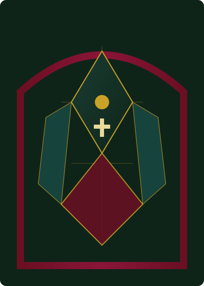

Weekend
- Saturday 5:00 p.m. Vigil
- Sunday 8:00 a.m.
- Sunday 10:30 a.m. with choir
- Sunday 5:00 p.m. Youth-led
Dominus vobiscum
Gather with us in prayer, receive the sacraments, and walk together in faith—all are welcome at the Lord’s table.
For over a century, St. Mary of the Angels has been a beacon of hope in our neighborhood—a place where the Eucharist is celebrated with reverence, where the poor are served with love, and where each person is called by name into deeper friendship with Christ.
“The Eucharist is the source and summit of the Christian life.”
— Catechism of the Catholic Church, 1324
Join us for the Holy Sacrifice of the Mass. Confession is offered before weekend Masses and by appointment. Full schedule →
Adoration, confession times, and holy day Masses are on our Mass & adoration page. Bulletins list any changes.
Call the parish office →Christ meets us in visible signs. Learn how we prepare for baptism, marriage, first Communion, and more on our sacraments page.
Infant baptisms are celebrated monthly; parents and godparents attend preparation. Adults enter through RCIA.
Saturday 4:00–4:45 p.m. or by appointment. God’s mercy is always greater than our sins.
Contact the parish at least six months before your wedding. See marriage preparation.
For serious illness or surgery, call the parish office day or night for a priest.
Faith grows in community. Explore ministries and volunteer opportunities.
Formation for children, youth, and adults—including RCIA and sacramental prep. Programs →
Neighbor-to-neighbor assistance with food, rent, and utilities. Learn more →
Choir, cantors, and servers. Serve at Mass →
Charity, unity, fraternity. Council info →
Our church is open for private prayer from dawn until dusk. If you are new, introduce yourself after Mass—ushers and clergy are glad to meet you. Parking is available behind the church and on Maple Street.

Questions about sacraments, registrations, or how to get involved? Visit our full contact page or call the office.
Parish office (555) 555-0100
Pastor pastor@stmaryangels.example